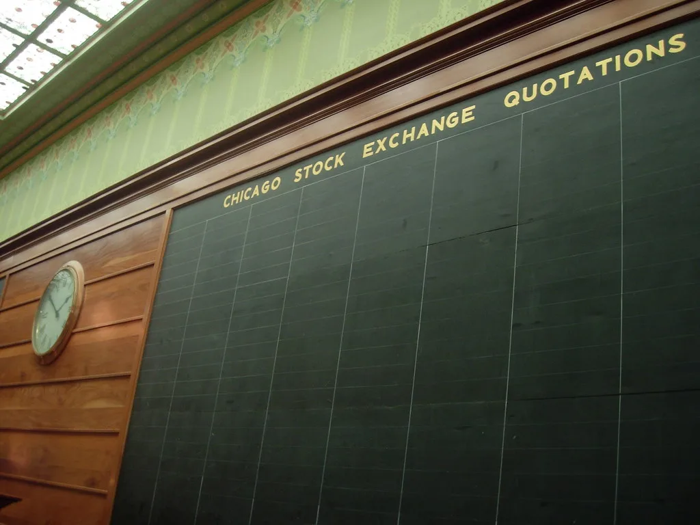

한국 경제가 3분기 반도체 수출 호조에 힘입어 시장 전망을 크게 뛰어넘는 성장세를 기록했다. 같은 시기 코스피는 외국인과 기관의 강한 매수세 속에 사상 최고치를 새로 썼다. 반도체 업황 호황이 실물경제 지표와 금융시장 지표를 동시에 끌어올리는 모습이 뚜렷하게 나타난 셈이다. 그동안 저성장 우려가 꾸준히 제기돼온 터라, 이번 발표는 경제 전반에 대한 비관론을 일부 되돌리는 계기가 됐다는 평가도 나온다.
한국은행은 27일 2026년 3분기 실질 국내총생산(GDP)이 전기 대비 1.0% 증가했다고 발표했다. 이는 한국은행이 지난 8월 내놓은 전망치 0.3%를 0.7%포인트나 웃도는 수치로, 시장 예상을 크게 벗어난 '깜짝 성장'으로 평가된다. 성장률이 전망치의 세 배를 넘어서면서, 연초 부진했던 성장 흐름이 하반기 들어 급격히 반등했다는 분석이 나온다.
성장을 이끈 가장 큰 축은 수출과 설비투자였다. 3분기 수출은 전기 대비 2.3% 증가했고, 설비투자는 4.1% 늘어나며 성장률을 끌어올리는 데 핵심적인 역할을 했다. 반도체 수요 확대에 대응해 기업들이 생산라인 증설과 장비 투자를 서두른 영향으로 해석된다. 반면 민간소비는 0.2% 감소하며 역성장을 기록해, 수출·투자와 소비 사이의 온도차가 뚜렷하게 드러났다.
실질 국내총소득(GDI) 지표에서는 더 극적인 변화가 확인됐다. 3분기 실질 GDI는 전년 동기 대비 18.8% 증가해 약 49년 만에 가장 높은 증가율을 기록했다. 수출 단가 상승으로 교역조건이 크게 개선되면서, 생산 활동으로 벌어들이는 실질 소득이 국내총생산 성장률보다 훨씬 빠르게 늘어난 것으로 풀이된다. GDP는 생산된 재화와 서비스의 양을 나타내는 지표인 반면 GDI는 그 대가로 실제로 벌어들인 구매력을 반영하는 지표라는 점에서, 이번 GDI 급증은 반도체 수출 단가 상승이 기업과 가계의 실질 소득에 직접적으로 보탬이 되고 있음을 보여준다는 해석이 나온다.

코스피는 이 같은 경제지표 서프라이즈에 환호하며 급등세를 보였다. 장중 매수 사이드카가 발동될 정도로 매수 주문이 몰렸고, 외국인과 기관이 동시에 순매수에 나서며 지수를 밀어올렸다. 코스피는 결국 5638.34로 거래를 마치며 사상 최고치를 경신했고, 반도체 대표주인 삼성전자와 SK하이닉스도 나란히 큰 폭으로 올랐다. 실물경제 지표와 증시 지표가 같은 날 동시에 기록을 새로 쓴 셈이어서, 투자자들 사이에서는 반도체 슈퍼사이클에 대한 기대가 한층 강해졌다는 반응이 나온다.
다만 시장에서는 반도체에 지나치게 쏠린 성장 구조에 대한 우려도 함께 제기된다. 수출·투자 지표는 호조를 보였지만 민간소비가 뒷걸음질한 만큼, 체감 경기와 거시지표 사이의 괴리가 당분간 이어질 수 있다는 지적이다. 전문가들은 반도체 업황이 꺾일 경우 성장률이 급격히 둔화될 수 있는 만큼, 소비·내수 기반을 함께 다지는 정책적 보완이 필요하다고 지적한다.
정부와 한국은행은 이번 깜짝 성장을 긍정적으로 평가하면서도 연간 성장률 전망을 상향 조정할지는 신중하게 검토하겠다는 입장이다. 반도체 슈퍼사이클이 얼마나 지속될지, 그리고 소비 회복이 뒤따를지가 향후 한국 경제의 성장 경로를 가르는 변수로 꼽힌다.